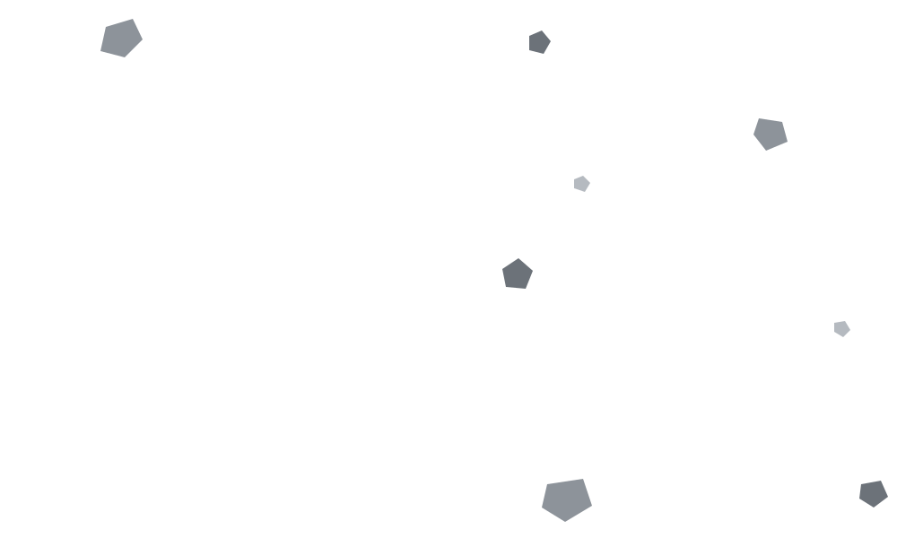

singkat
Padat, tanpa hiasan.
Object prop inline (style={{ color: 'red' }}) bikin reference baru tiap render parent, jadi child ikut re-render walau data sama. Bungkus pakai useMemo biar reference tetap selama dependency ga berubah.

irit memangkas basa-basinya. Kode, perintah, dan pesan error tetap utuh.
npx caveman-indonesia
Sebelum menjawab, agent menyapa.
Sesudah menjawab, agent mendoakan.
Semuanya ditagih per token.
Pertanyaan Kenapa komponen React saya re-render terus?
160token
Jawaban biasa, apa adanya.
Tentu, saya akan membantu menjelaskan masalah ini! Komponen React Anda kemungkinan besar melakukan re-render terus-menerus karena Anda membuat sebuah object baru sebagai prop di setiap proses render. Ketika Anda menuliskan object secara inline, misalnya `style={{ color: 'red' }}`, React akan menganggap bahwa object tersebut adalah reference yang baru setiap kali komponen parent melakukan render. Akibatnya, komponen child juga akan ikut melakukan re-render walaupun sebenarnya datanya tidak berubah sama sekali. Untuk mengatasi masalah ini, Anda dapat membungkus object tersebut dengan menggunakan hook `useMemo`, sehingga reference-nya akan tetap sama selama dependency-nya tidak berubah. Semoga penjelasan ini membantu, dan jangan ragu untuk bertanya jika ada hal lain yang ingin Anda ketahui!
Object prop inline (`style={{ color: 'red' }}`) bikin reference baru tiap render parent, jadi child ikut re-render walau data sama. Bungkus pakai `useMemo` biar reference tetap selama dependency ga berubah.
Tiap kotak satu token o200k_base. Jawaban irit adalah sampel mode singkat dari benchmark.
Tokenizer hafal kata utuh. Singkatan malah dipotong jadi dua.
| Kata utuh | Token | Singkatan | Token |
|---|---|---|---|
| tidak | 1 | tdk | 2 |
| sudah | 1 | udh | 2 |
| dengan | 1 | dgn | 2 |
| karena | 1 | krn | 2 |
| juga | 1 | jg | 2 |
Jadi irit menulis kata utuh, lalu membuang basa-basinya.
Ganti kapan saja dengan /irit, /irit jaksel, atau /irit sunda. Balik normal dengan /irit off. Kalau kamu menulis dalam bahasa Inggris, irit menjawab dalam bahasa Inggris yang ringkas, tanpa logat.
Padat, tanpa hiasan.
Object prop inline (style={{ color: 'red' }}) bikin reference baru tiap render parent, jadi child ikut re-render walau data sama. Bungkus pakai useMemo biar reference tetap selama dependency ga berubah.
Tata bahasa Indonesia, kosakata Inggris diselipkan.
Basically, object prop inline (style={{ color: 'red' }}) itu bikin reference baru tiap parent render, so child ikut ke-trigger re-render even kalau datanya sama. Wrap pakai useMemo aja, reference-nya stay selama dependency ga berubah.
Sunda loma ala Bandung, bukan sekadar ditempeli teh.
Object prop inline (style={{ color: 'red' }}) teh jadi reference anyar unggal render parent, matak child ikut re-render sanajan datana teu robah. Bungkus ku useMemo atuh, ngarah reference-na tetep salila dependency teu robah.
Enam pertanyaan, masing-masing dijawab dengan empat cara, lalu dihitung dengan tiktoken o200k_base. Jalankan python benchmarks/run.py di repo untuk angka yang sama.
| Mode | Token | Panjang relatif | Hemat |
|---|---|---|---|
| biasa | 868 | ||
| singkat | 307 | 64,6% | |
| jaksel | 340 | 60,8% | |
| sunda | 350 | 59,7% |
Sampelnya ditulis tangan untuk menunjukkan bentuk tiap mode, bukan keluaran model langsung. Hasil nyata tergantung seberapa patuh model kamu. Skill ini sendiri memakan sekitar 1.028 token setiap dimuat, jadi hematnya baru terasa setelah beberapa jawaban.
Peringatan keamanan, hapus data, force push, dan langkah yang urutannya penting ditulis lengkap. Setelah itu, irit lanjut ringkas.
Peringatan: Perintah ini menghapus permanen semua baris di tabel users dan tidak bisa dibatalkan. Pastikan backup sudah ada.
npx caveman-indonesia
/plugin marketplace add Leon24k/caveman-indonesia/plugin install irit@caveman-indonesianpx skills add Leon24k/caveman-indonesiaHemat token, bukan hemat makna.